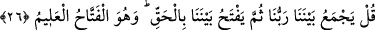

Herkes yaptığından sorumludur. Her çiftçi başkasının ektiğini değil kendi ektiğini
biçer.
Gittiler ve herkes ektiğini biçti.
Bu söz adâlet bakımından daha etkili, cedel ve yoldan sapmaktan daha uzaktır. Çünkü,
zelle ve evlâ olanın terk edilmesi kasdedilmiş olsa da suç işleme fiili mü’minlere,
yaptıkları işler büyük günahların en büyüğü olmasına rağmen mutlak olarak iş/amel
muhâtaplara isnâd edildi.
26. De ki: “Rabbimiz hepimizi bir araya toplayacak, sonra aramızda hak ile
hükmedecektir. O, en âdil hüküm veren, (her şeyi) hakkıyla bilendir.
“De ki:” Kıyâmet günü haşr ve hesap zamanında “Rabbimiz hepimizi bir araya
toplayacak” bizden ve sizden herkesin hâli belli olduktan “sonra” hak yolda olanları
cennete, bâtıl yolda olanları da cehenneme koyarak “aramızda hak ile hükmedecektir.
O,” müşkil dâvâlarda “en âdil hüküm veren” ne ile ve kimin lehine, kimin aleyhine
hüküm vereceğini “hakkıyla bilendir.” Ona hiçbir şey gizli kalmadığı gibi bu husus da
gizli kalmaz.
“__WORD__ açmak, fethetmek ve hükmetmektir.
Zerrûkî der ki: “el-Fettâh” dünyevî ve uhrevî işlerde ruhlar ve bedenler için
darlıktan ve kapının kapanmasından sonra hayır ve genişlik izhar ederek lütuf ve
ihsanda bulunan demektir.”
Meşâyıhtan bazıları der ki: “el-Fettâh” ismi, ‘feth’ kökündendir. Feth ise darlığı açıp
gidermektir. Nitekim bir kimse verdiği hüküm ile iki hasım arasında hak konusundaki
darlıkları açıp giderir. Yine bir kimse hayrı ile gönül darlığını, öğretmek sûretiyle
cehâletin darlığını, malını bezlederek fakirliğin darlığını açıp giderir.
İmam Gazzâlî (r.h.) der ki: “el-Fettâh”, inâyet ve yardımıyla her kapalı olanın
açıldığı, hidâyeti ile her müşkil ve zorluğun aşıldığı zâttır. Bazen memleketleri/ülkeleri
peygamberlerine açar ve düşmanlarının ellerinden çıkarır. Allah Teâlâ şöyle buyuruyor:
“Biz sana doğrusu apaçık bir fetih ihsan ettik. Böylece Allah senin geçmiş ve
gelecek günahlarını bağışlar...” (el-Feth, 48/1-2-3). Bazen de dostlarının kalplerinden
perdeyi kaldırır, semâsının melekûtuna ve kibriyâsının cemâline doğru onlara kapılar
açar. Allah Teâlâ şöyle buyuruyor: “Allah’ın insanlara açacağı herhangi bir rahmeti
tutup hapseden olamaz.” (Fâtır, 35/2) Gaybın anahtarları ve rızkın anahtarları elinde
olan, elbette fettâh olmaya en layık olandır.
İlâhî zorlukların kilitlerinin kulun diliyle açılmasına kadar, aynı şekilde dînî ve
dünyevî işlerden halka zor gelenlerin Allah’ın yardımıyla ona kolay hale gelmesine
kadar kulun “el-Fettâh” isminden bir nasibi olması için hasret çekmesi gerekir.